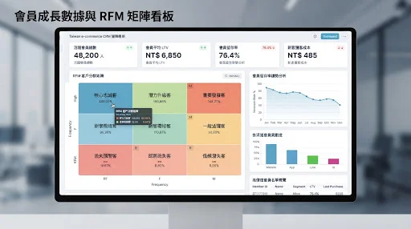
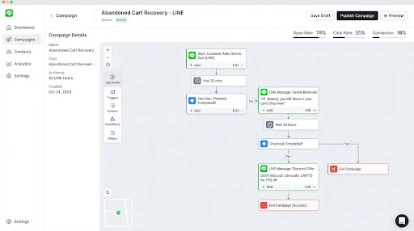
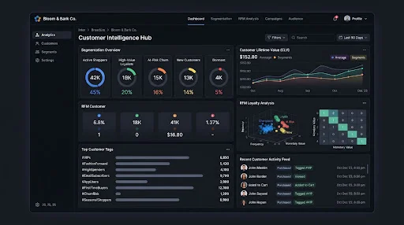

02 ‧ 商機進度看板與銷售漏斗 (Sales Pipeline & Kanban)
#0203 ‧ RFM 客群智慧價值矩陣看板 (RFM Segmentation Matrix)
#03
04 ‧ 自動化顧客旅程與行銷推播流 (Automated Journey Builder)
#04
05 ‧ 會員特權與動態行為標籤管理 (Dynamic Behavior Tagging)
#0506 ‧ LINE 官方帳號對話整合與雙向同步 (Omni-channel LINE Hub)
#06
07 ‧ 顧客生命週期與流失預警分析 (Churn Risk Analytics)
#07
08 ‧ 拜訪與通話紀錄智慧摘要 (Call & Meeting Logs)
#0809 ‧ 業務人員業績與提成報表 (Sales Commission Dashboard)
#0910 ‧ 合約報價單線上簽核與追蹤 (E-Signature & Proposal Flow)
#1011 ‧ 顧客滿意度 CSAT / NPS 追蹤分析 (NPS & Feedback Analytics)
#11
12 ‧ 沉睡客戶自動化激活策略 (Dormant Customer Reactivation)
#12
13 ‧ 待辦跟進提醒與智慧日曆 (Follow-up Tasks Calendar)
#1314 ‧ 售後工單與顧客服務追蹤 (Ticketing & Service Desk)
#1415 ‧ 跨門市多通路線上線下消費整合 (Omni-channel Purchase History)
#15
16 ‧ 跨組織權限與部門資料隔離管理 (Role-based Permission Access)
#16
17 ‧ 大宗 EDM / SMS 精準受眾群發 (Targeted Campaigns)
#17
18 ‧ VIP 會員專屬優惠券投放 (VIP Coupon Dispenser)
#1819 ‧ 客戶歷史互動時間軸 (Chronological Touchpoint Timeline)
#19
20 ‧ AI 智能客服與商機小助手 (AI CRM Copilot Assistant)
#20CRM 客戶管理系統 ‧ 完整 20 大架構地圖
01 全景客戶檔案
02 銷售漏斗看板
03 RFM 客群矩陣
04 自動旅程推播
05 動態標籤管理
06 LINE 官方綁定
07 流失預警分析
08 通話拜訪摘要
09 業績抽成報表
10 線上報價簽核
11 顧客滿意度追蹤
12 沉睡客戶激活
13 待辦跟進日曆
14 售後服務工單
15 多通路消費整合
16 組織權限管理
17 精準受眾群發
18 VIP專屬禮遇
19 互動時間軸
20 AI 智能小助手
專屬諮詢預約
打造專屬 CRM 客戶管理系統？
提供客製化企業客戶關係管理、LINE 深度整合與銷售漏斗追蹤服務，專業顧問團隊助您迅速完成系統建置與業務上線。